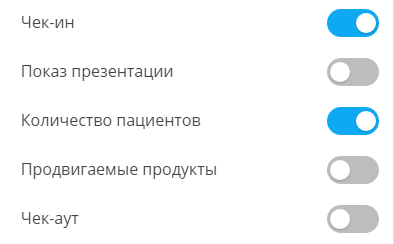
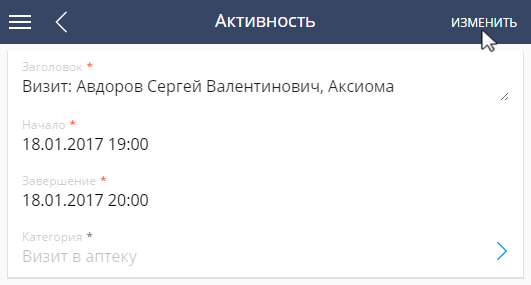

Функциональность Pharma Creatio позволяет фиксировать в системе действия медицинских представителей непосредственно во время визита. Для этого необходимо использовать мобильную версию Creatio. В качестве мобильного устройства оптимально использовать планшет. Для удобства работы рекомендуем использовать его в горизонтальном положении.
Результат выполнения действий медицинского представителя фиксируется в основном приложении Creatio на детали Действия визита страницы визита.
Все действия медицинского представителя на визите могут выполняться как в online- так и в offline-режимах. При работе в offline-режиме наличие постоянного подключения к интернету не требуется. Необходимо периодически выполнять синхронизацию с основным приложением, чтобы изменения, внесенные на мобильном устройстве, были сохранены на сервере Creatio. Выбор нужного режима работы осуществляется в системной настройке “Режим работы мобильного приложения” (код “MobileApplicationMode”).
Чтобы выполнить синхронизацию с основным приложением:
-
Убедитесь, что ваше мобильное устройство подключено к интернету.
-
Перейдите в раздел Настройки мобильного приложения.
-
На открывшейся странице нажмите кнопку Синхронизация.
В результате в мобильном приложении отобразятся данные из основного приложения, а в основном приложении появятся данные, которые были созданы в мобильном приложении пользователя.
Чтобы выполнить действие во время визита:
-
Откройте страницу визита.
-
На детали Действия визита установите переключатель напротив необходимого действия в позицию “Выполнено”.
Переключатель в позиции “Выполнено” подсвечивается голубым цветом Рис. 1).В результате действие на визите будет считаться выполненным. Вы можете завершить визит, только если были выполнены все обязательные действия. Чтобы выполнить обязательное действие, необходимо чтобы было выполнено предыдущее обязательное действие. В результате выполнения последнего обязательного действия состояние визита автоматически переводится в завершенное. Выполнение необязательного действия может быть пропущено.
Рис. 1 — Пример выполнения действий визита в мобильном приложенииВы можете завершить визит, только выполнив все обязательные действия. Для выполнения очередного обязательного действия необходимо, чтобы было выполнено предыдущее обязательное действие. В результате выполнения последнего обязательного действия состояние визита автоматически переводится в завершенное. Выполнение необязательного действия может быть пропущено.
Показать презентацию
Если правилом визита предусмотрено проведение презентации, то выполните действие визита “Показ презентации”. Для этого установите переключатель напротив действия в позицию “Выполнено”.
В результате на мобильном устройстве откроется файл, который вы можете использовать при показе.
Указать количество пациентов
Данные о том, сколько пациентов принимает врач, и какие диагнозы требуют назначения продвигаемого препарата, используются для выполнения категоризации врача. Поэтому действие “Количество пациентов” является необходимым для выполнения. Чтобы указать количество пациентов и их диагнозы, установите переключатель напротив действия в позицию “Выполнено”.
В результате отобразится окно с перечнем заболеваний (нозологий), с которыми пациенты обращаются к данному врачу, и полем Потенциал напротив каждой из нозологий. Узнав у врача количество пациентов с интересующей вас нозологией, укажите его в поле Потенциал (Рис. 2).
Указать продвигаемые продукты
Данные о том, сколько единиц продвигаемого препарата выписывает врач, используются для расчета лояльности врача и выполнения его категоризации. Поэтому действие “Продвигаемые продукты” является необходимым для выполнения. Чтобы указать количество выписок, установите переключатель напротив действия в позицию “Выполнено”.
В результате отобразится список продуктов, продвигаемых через данного врача. Напротив нужного продукта укажите количество в поле Выписки (Рис. 3).
Выполнить мониторинг SKU
Если правилом визита предусмотрено проведение мониторинга изменения ассортимента товара (SKU), то выполните действие визита “Мониторинг SKU”. Для этого установите переключатель напротив действия в позицию “Выполнено”.
В результате откроется страница, на которой вы сможете зафиксировать остаток по каждому продвигаемому через аптеку продукту, а также проверить выкладку товара (Рис. 4).
С помощью мобильного устройства вы можете сделать фото выкладки товара и прикрепить его к визиту. Для этого:
-
На странице активности нажмите кнопку Изменить (Рис. 5).
Рис. 5 — Переход к редактированию визита -
На детали Файлы и ссылки нажмите кнопку .
-
На открывшейся странице вы можете выбрать сделанную ранее фотографию из галереи вашего мобильного устройства и прикрепить ее к активности. Также можно использовать действие Сделать фото, в результате выполнения которого откроется режим фотосъемки. Сохраненное изображение будет автоматически прикреплено на деталь Файлы и ссылки.